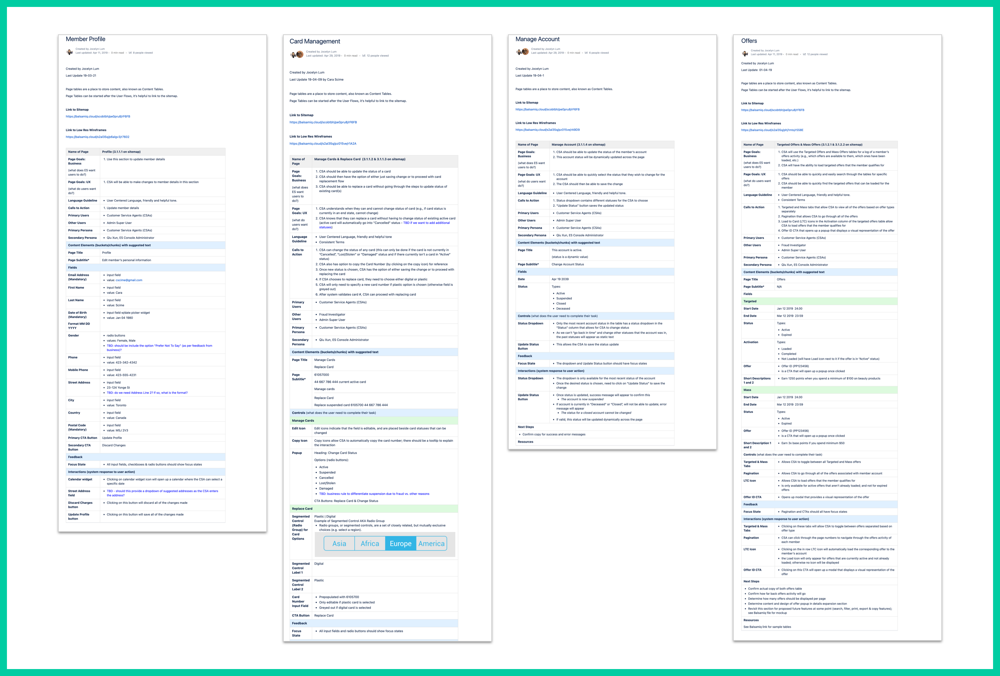
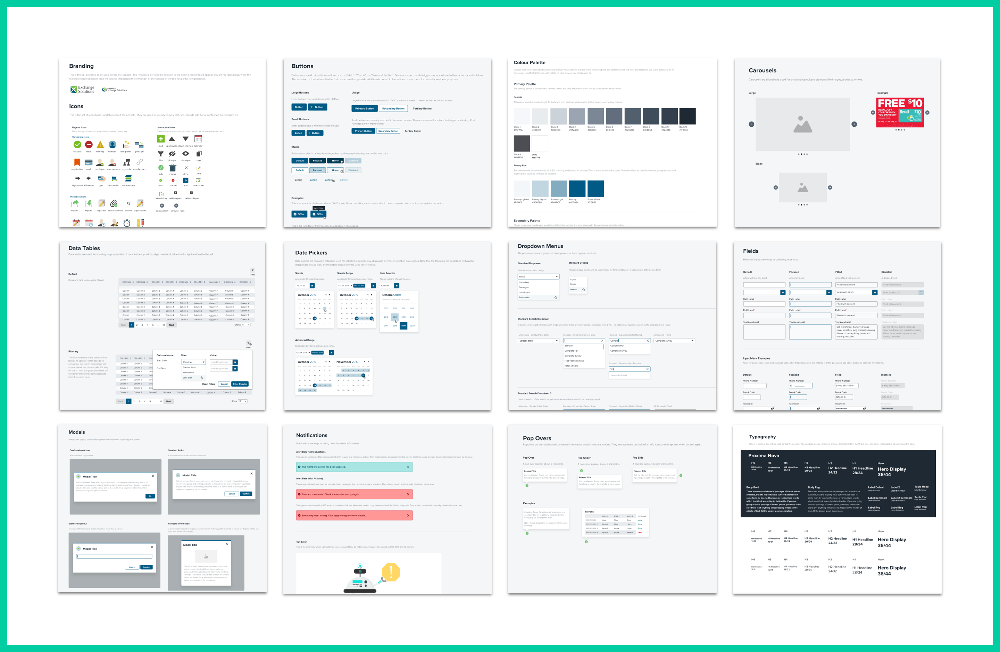
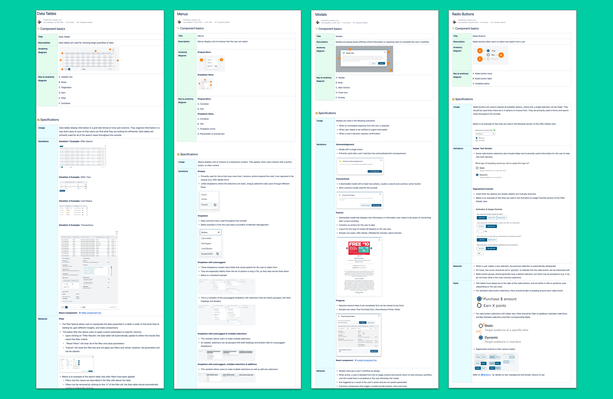
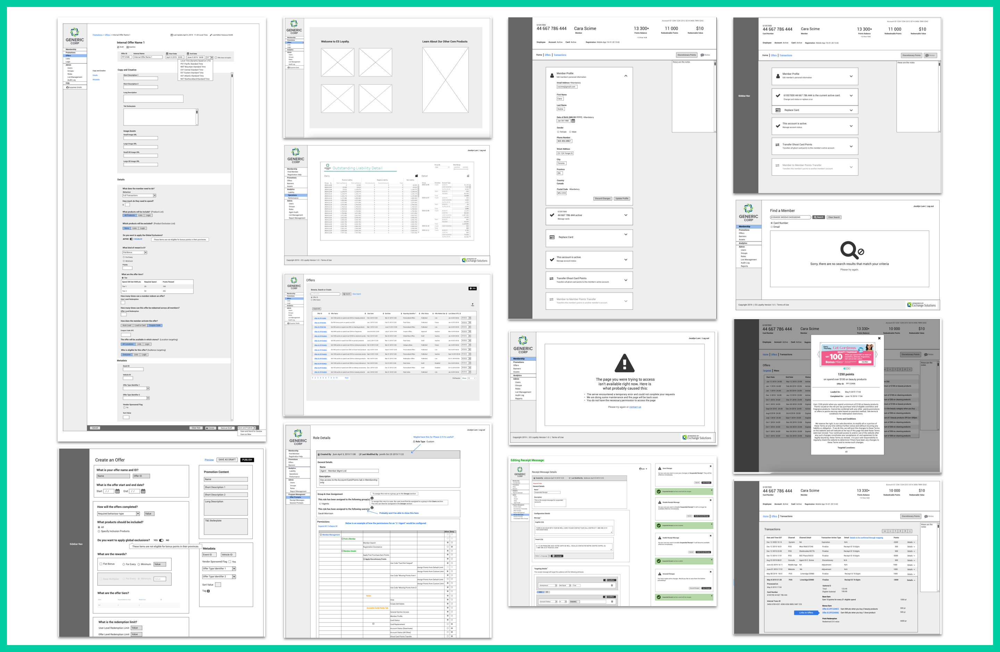
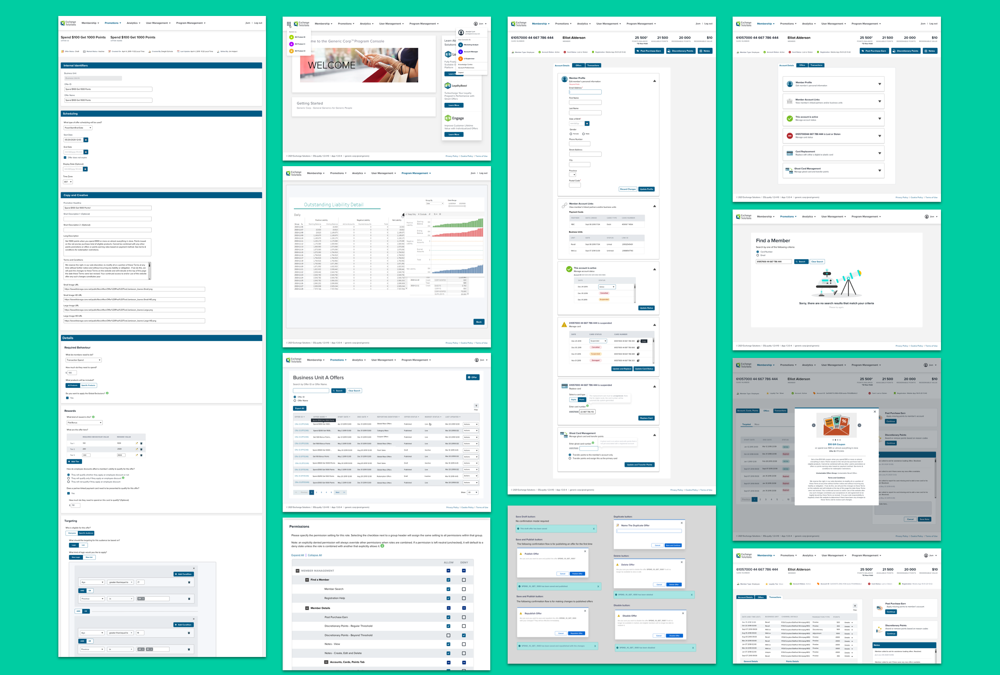

Exchange Solutions (ESI) designs, builds and operates loyalty and customer engagement programs. These programs aim to help improve customer acquisition, engagement, customer lifetime value and retention, as well as maximize revenues and profitability, while minimizing costs to our clients.
The Project
The goal of this project is to design and build a platform that runs one of our core loyalty products: ES Loyalty. It is a comprehensive, fully featured loyalty product that supports all forms of omni-channel Loyalty, Membership and Rewards programs.
The self-serve console is one of ES Loyalty’s main features. Some of the components of its UI include:
Membership - manage member inquiries, view transaction history, view/load available offers, update/replace cards, and issue discretionary points, among many other features
Promotions - set up, view and manage complex promotional strategies
Analyrics - access and view loyalty program metrics, KPIs, fraud and controls, and various other forms of reporting
User Management - manage users, groups and roles of the console
Users & Audience
The ES Loyalty product is geared towards enterprise and mid-size retailers based in North America, that are interested in integrating a loyalty program into their business model, or enhancing existing loyalty programs.
Specific users of the self-serve console are predominantly call centre agents, program administrators, and marketers.
Team & Role
As part of “Project Wizard”, work on the self-serve console began in early-January 2019, and I was officially brought in late-March.
Up until that point, I had been a software developer at ESI for just under 2 years. I had always gravitated towards CSS and design in general, so the opportunity to get hands-on UX design experience was presented to me to gauge my interest.
The scrum team consisted of 11 key players, with support from key stakeholders representing the product, account management, client technology solutions, and analytics teams.
I worked closely with most members of the team, namely the team lead, scrum master and front-end developers. Additionally, the product team was my primary resource for requirements as well as the overall vision of the platform.
Over the course of the project, we cycled through many different team members. The summer of 2020 marked a turning point, when we decided to enlist offshore resources to provide us with additional support.
Challenges
We were faced with numerous constraints for this project, ranging from a tight timeline, an ever changing scope, and many UX-specific hurdles:
No one had any experience or knowledge of UX design.
Greatly underestimated amount of time required to produce designs
A lot of assumptions were made that were not based on user research
Design was done in parallel to development
Could not adopt any UX practices like Design Thinking or Lean UX
I personally had no prior UX experience, and had to learn everything on my own
The scope was ever changing.
Individual features were not always fully fleshed out prior to development, so designs sometimes had to be iterated upon as developers were already working on them
Priorities were often dropped when more pressing issues or features came up
We often gave in to last minute client requests, despite negative impact on burndown rate
The team was constantly changing.
Developers were pulled in and out of the project
There were numerous resignations, which led to periods of limited capacity
Shift towards bringing in offshore resources proved to be a challenge when it came to coordination and planning
ProcessPersonas
Due to time constraints, we were unable to adopt a Design Thinking approach to define personas. Rather, we leaned on market research that had been conducted by the product team, as well as through preliminary discussions with the client.
After several brainstorming sessions, we came up with 5 personas:
Tools
For quick low resolution wireframes, we decided to go with Balsamiq. They offer an extensive library of components, as well as an intuitive interface that reduces the learning curve for new users (especially those on a tight deadline). Another huge advantage is their iteration and versioning tools, which makes it easier to keep track of changes without worrying about making any destructive lasting changes.
As it was one of the most well-known and popular options at the time, Sketch was the tool of choice for producing high resolution mockups. Paired with inVision, it proved to be an effective and efficient way to share designs with members of the team.
In order to expedite the high resolution designs, we decided to use a UI kit called UX Power Tools, which provided us with a solid selection of components that we would need to build the UI with.
We also enlisted our graphic designer to help with producing assets (logos, icons, etc), as well as to provide guidance on fonts, colours, and other general styling.
Preliminary Documentation
Before jumping into the designs, we started with a more holistic approach of trying to understand the platform as a whole, as well as how all the individual components should be laid out and flow together.
We put together a sitemap that was iterated upon as the features and sections became more well-defined:
Sitemap (April 10, 2019)
We also created page tables to summarize such details as the purpose, users, and fields of each of the sections. The intent was for them to be assets that developers and the QA team can reference for development and testing, respectively.

Sample Page Tables
During this time, I also started putting together a design system (though at time, it was more of a style guide) using the one that came with UX Power Tools as a template. Later iterations included more details on best practices, accessibility considerations, and component behaviour/variations.

Old Design System

New Design SystemFlow
Months into the project, my UX process became increasingly well-defined. Whenever we began working on a new feature, I would aim to follow this workflow:
Go through requirements with the product manager
Research best practices on the components required for the feature (my go-to resources include Nielsen Norman Group, Baymard Institute, and Interaction Design)
Look into how similar features were implemented by competitors and/or companies with large consumer-facing sites - e.g. Amazon
Create Balsamiq wireframes and annotate any items that require clarification, and/or callouts on items that are awaiting additional details
Have a follow-up meeting with the product manager to go through outstanding items, and finalize designs
Discuss the designs with the tech lead to see if they align with his technical design; tweak the designs as needed
If new functionality is being introduced with the feature, discuss with developer(s) to see if they are feasible to implement
Create Sketch mockups; in addition to layouts, provide the copy for confirmation modals, success/error alert bars, form validation messaging, etc.
As needed, update design system with new components, icons/images, and relevant details
Work closely with developers as they implement the designs to address any questions regarding expected functionality and flow
Once development work is complete, do a final review before the changes are merged into the master codebase
Developers demo the feature and address any changes as needed

Sample Balsamiq Wireframes

Sample Sketch MockupsA Deeper Dive
Due to the scale of the project, I am only going to highlight my design thought process for one of the sections of the console: the offer details form.
One of the most important features of the console was the ability to create and manage offers that are a part of the client’s promotional strategies.
Right off the bat, we knew that this process would involve the user filling out a form (or several forms, depending on the complexity and volume of configurations).
In fact, the earliest iteration of the section was quickly put together by one of the front-end developers, to have something more concrete to share amongst the team. It included some of the main configurations that were known at the time, including what members need to do to qualify for the offer, product inclusions and exclusions, rewards, and how the offer is activated.
First iteration of offer details view
In the interest of time, I modeled my wireframe after what we already had, and added more features as they became known through meetings with the product team.
First Balsamiq wireframe of offer details view
Along the way, I included annotations on variable content like statuses and states to point out how the layout would differ depending on the use case.
Once I had a good sense of what configurations were needed, I decided to delve deeper into form design best practices. I consulted some well-known resources touted by the UX community, including Nielsen Norman Group and Interaction Design. I also referenced similar platforms from companies like Clutch, Session M and Salesforce for inspiration, and to see if there were patterns that were consistent across each one.
An example of something that was often recommended was to structure forms in a single-column as opposed to multiple. With empirical studies (eye-tracking studies, case studies, and A/B testing) backing this up, I was confident that this would be the right approach for our form. Being such a complex form, I wanted to lay it out in such a way that flowed naturally with the eye and reduced cognitive load as much as possible.
In terms of copy and tone, we decided to follow Clutch’s approach, which framed each of the configurations as questions. We felt that this would make an otherwise technical form more human-readable, and therefore easier to digest. While power users like the account manager would get the hang of a more complex form with repeated use, we wanted to make sure that occasional users like external stakeholders (who periodically compare past and present promotions for trend analysis) would be able to understand the form as well.
Aside from drawing inspiration and patterns from external sources, another best practice I came across was to have consistency throughout the app/console, and reuse patterns as often as possible (but allow for exceptions when it enhances the overall understanding of the feature). With that in mind, I decided to reuse a pattern of having all of the “key stats” at the top of the page. Below is a snapshot of how the top of the member account view in the Membership section looks like:
Top section of member account view
The member’s name, card number, card/account status, etc., are all grouped together to provide a summary view of the most important information, so that a customer service agent can easily find this at a glance.
Likewise, I felt that the offer form view would benefit from having a summary of some of the offer’s most important features, such as the offer name, statuses, as well as creation/update details. This way, users won’t need to scroll through the lengthy form below to find this information:
Top section of offer details view
One of the biggest challenges was determining how to design the query builder (for product, audience and location targeting) in such a way that made complex segments easy to build and interpret.
Some of the earliest iterations of the query builder were assembled by one of our front-end developers:
First iterations of the query builder
As someone with a developer background, I had no trouble understanding this design, and could ascertain with ease how it was to be used. But I knew that this would not be the case for the typical user of the console. The elements that stood out to me first were the placement of the And/Or operators, as well as use of the term “rule”. I decided on the term “condition” instead, as this was commonly found in examples that I came across in my research.
In an effort to make the query builder more human-readable, I also decided to make the queries read like sentences. Specifically, I referenced an example from Session M, that placed the operators in between the individual conditions and groups. This was far more intuitive than having the operators at the top, with lines joining them to their corresponding conditions and groups.
I also made use of containers and colours to further differentiate the conditions from the groups. This is particularly helpful for scanning through complex queries.
Lastly, I decided to include a “Preview Targeting” feature, which summarizes the query, as well as an estimated count of how many entries would be targeted with the defined criteria. The count feature was common across platforms from Clutch, Session M, and other segment builders I saw through my research.
During my process of coming up with this design, the team implemented a more barebones version of the query builder. The intent was to have a working version that was to be iterated upon at a later date.
Current version of query builder
Once my design was finalized, I presented it as a clickable demo during a UX Summit (held in the spring of 2020) for feedback and approval. It was well received by all, but has yet to be implemented as of the writing of this case study.
Proposed version of query builder
Outcome & Lessons Learned
The ES Loyalty platform was officially launched in the marketplace in January 2020, followed by a public launch in May.
However, the project is ongoing, as we have a slew of enhancements and new features that are still in the process of being rolled out. All in all, the initial launch was a success, and the client was very pleased with our product.
Many lessons were learned from this project. There are a number of things that I would have done differently for the design of the console, as well as with the process in general:
Push for client feedback
As nobody had much prior experience with UX design, seeking out feedback from the client was not a top priority
Knowing what I know now, I should have presented qualitative data to effectively demonstrate the benefits of user research and usability testing
As a fallback option, regular internal usability testing should have been proposed
Employ more big picture thinking with designs.
Several flows and layouts had to be reworked as they proved to be too restrictive and inflexible for additional features that were added on
Being more involved in the requirements gathering phase, and familiarizing myself more with the product as a whole would have provided me with more well-rounded context
Spend more time deciding on what tools to use.
In hindsight, Figma would have been a better tool to use than Sketch
Figma is more ideal for real-time collaboration (vs. sending version controlled Sketch files back and forth), and file sharing is much easier as each project has its own URL
I would have also chosen a plugin like Zeplin over inVision, as it appears to have more utility for developers, and has a more intuitive layout and solid selection of options to work with
Looking Ahead
Despite the many challenges I faced throughout this project, I feel like it went very well all things considered. Most importantly, I learned a lot along the way and now have a solid knowledge base and tools to take on future projects. As my first foray into UX design, I am proud of what I was able to (and continue to) achieve.
Going forward, I am going to focus more on spreading awareness and sharing my knowledge on UX within my team, as well as with the company as a whole. I will also make it a top priority to push for user research and usability testing with the next UX project that comes my way.


 Tools
Tools